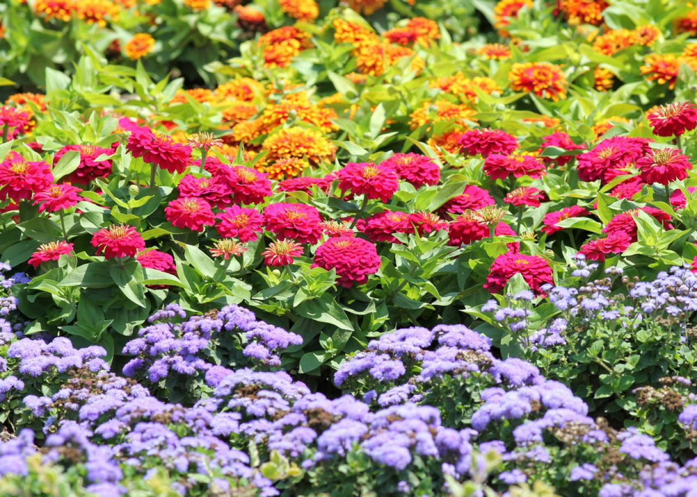

Flowering Plants

Flowering plants, scientifically known as angiosperms, are the most diverse and widespread group within the plant kingdom. They are characterized by their ability to produce flowers and seeds enclosed within a fruit. Angiosperms dominate most of Earth's landscapes, from tropical rainforests to temperate forests, grasslands, and desert environments. Their adaptation to a wide range of habitats is a key factor in their evolutionary success and ecological dominance.
Key Characteristics
- Flowers: The defining feature of angiosperms, flowers are the reproductive structures that facilitate pollination through various agents including insects, birds, and wind. Flowers vary greatly in size, color, and shape, adaptations that often correspond to specific pollinators.
- Seeds Enclosed in Fruit: Unlike gymnosperms, angiosperms produce seeds that are enclosed within a fruit, which can be either fleshy or dry. The fruit serves to protect the seeds and can aid in their dispersal through mechanisms involving wind, water, or animals.
- Broad Leaf Structure: Most angiosperms have broad leaves with a network of veins, which increases the surface area for photosynthesis and transpiration. This structure is particularly efficient in capturing sunlight and exchanging gases.
Classification
Angiosperms are divided into two main groups based on the number of seed leaves (cotyledons) in the plant’s embryo:
- Monocots: Characterized by having one cotyledon, parallel leaf veins, flower parts in multiples of three, and a fibrous root system. Common examples include grasses, lilies, orchids, and palms.
- Dicots (Eudicots): Typically have two cotyledons, net-like leaf veins, flower parts in multiples of four or five, and a taproot system. This group includes roses, legumes, cacti, and most deciduous trees.
Habitat and Adaptations
Angiosperms have adapted to a vast array of environments
- Tropical Rainforests: Here, angiosperms such as orchids and bromeliads have evolved to grow on other plants (epiphytically) to access light above the dense forest canopy.
- Deserts: Desert angiosperms like cacti have thick, waxy skins to minimize water loss and spines to deter herbivores.
- Aquatic Environments: Aquatic angiosperms such as water lilies have broad floating leaves and special tissues for buoyancy and air exchange.
Ecological Roles
- Pollination Networks: Angiosperms are central to pollination networks, which are critical for the production of fruits and seeds that feed a wide range of wildlife
- Primary Producers: As primary producers, flowering plants convert solar energy into food energy through photosynthesis, supporting entire ecosystems.
- Habitat Structure: Large angiosperms such as trees provide essential habitat structures like forests, which serve as home to countless other species.
Conservation Challenges
Angiosperms face threats from habitat destruction, climate change, invasive species, and overexploitation. Many flowering plants are crucially dependent on specific pollinators, which are themselves under threat, creating compounded risks for